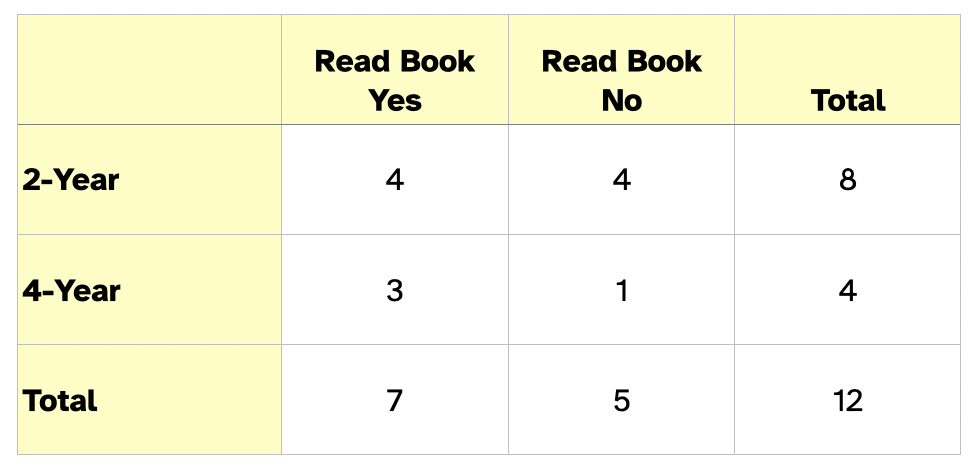
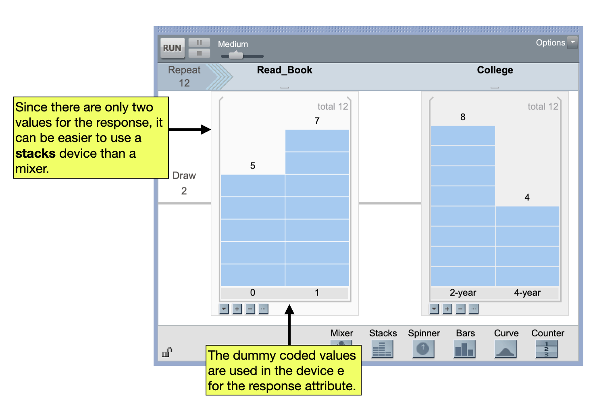
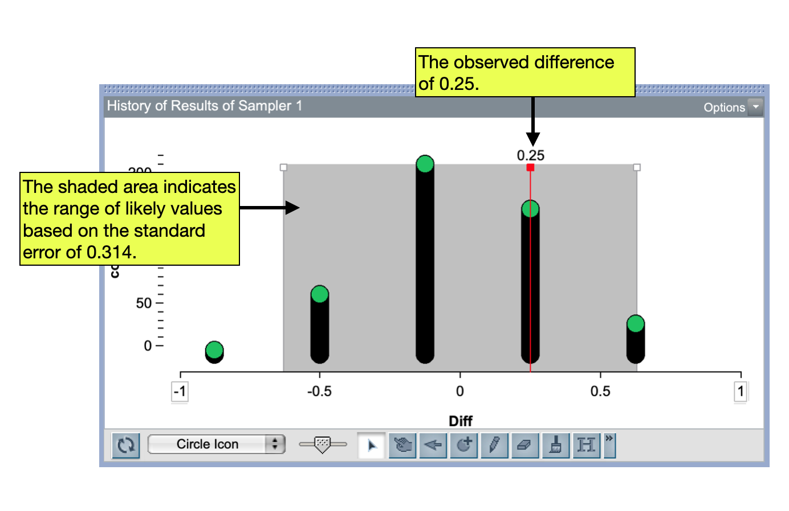

| 2-Year College | 4-Year College |
|---|---|
| Yes | No |
| No | Yes |
| No | Yes |
| Yes | Yes |
| Yes | No |
| No | Yes |
| No | Yes |
| Yes | Yes |
Working with Categorical Responses
Often, the responses that researchers are comparing are categorical attributes. For example, a researcher may be interested in evaluating whether one group reads more than another group. To evaluate this they ask everyone in both groups whether they read a book in the previous week and collect the response which is either “Yes” or “No”. The response attribute is then the “Yes” and “No” responses from the participants. If we wanted to evaluate whetehr one group read more than another, how would we summarize the groups reading? And how does this change what we do in the randomization test to evaluate the observed difference?
Summarizing Group Differences
Continuing with our reading example, imagine you had the following response data from both 2-year and 4-year college students about whether they read a book in the previous week:
One way we can summarize categorical data is with counts. Here we find that 4 students from 2-year colleges and 3 students from 4-year colleges read a book in the previous week. When we present counts, we typically do so in a contingency table. In the contingency table, the rows and columns indicate the response attribute and the grouping attribute, respectively. Each cell represents the count for a particular combination of those two attributes.

One problem with counts for comparing groups if the group sizes are different is that they can be misleading. Here, if we used counts, we would say that students from 2-year colleges read more than students from 4-year colleges. The problem is that there were more 2-year college students in our sample than there were 4-year college students.
Instead of counts, when comparing groups, statisticians use proportions. This alleviates the problem of unequal group sizes. In our data the proportion of 2-year college students that read a book in the previous week is 0.50 (4 out of 8), and the proportion of 4-year college students that read a book in the previous week is 0.75 (3 out of 4).
Statistical Hypotheses
The two statistical hypotheses are now about the proportion of responses. In our example, if the researcher hypthesized that a higher proportion of 4-year college students than 2-year college students read a book in the previous week, the statistical hypotheses would be:
\[ \begin{split} H_0:~&\text{There is no difference in the proportion of 2-year and and 4-year}\\ &\text{college students who read a book in the previous week.}\\[1em] H_A:~&\text{A higher proportion of 4-year college students}\\ &\text{than 2-year college students read a book in the previous week.} \end{split} \]
Writing these mathematically:
\[ \begin{split} H_0:~&\pi_{\text{4-Year}} - \pi_{\text{2-Year}} = 0\\ H_A:~&\pi_{\text{4-Year}} - \pi_{\text{2-Year}} > 0 \end{split} \]
where the Greek letter \(\pi\) is the symbol we use for proportion.
Dummy Coding
Before we carry out our randomization test, we introduce the concept of dummy coding, a method that statisticians use to deal with categorical attributes. Dummy coding is a way to re-code categories into numbers, so that the outcome becomes “quantitative”. The idea of dummy coding is that each category of the outcome gets a numerical value of either “1” or “0”.
For example, consider the eight 2-year college students in our sample. We are going to dummy code their responses so that anyone who responded “Yes” gets a “1” and anyone who responded “No” gets “0”. Their data looks like this:
| 2-Year College | Read_Book |
|---|---|
| Yes | 1 |
| No | 0 |
| No | 0 |
| Yes | 1 |
| Yes | 1 |
| No | 0 |
| No | 0 |
| Yes | 1 |
FYI
The name of the dummy coded attribute traditionally takes the name of the category that was re-coded as 1. In our example we re-coded “Yes: Read Book” to 1, so the name of the dummy coded variable is “Read_Book”.
Once the re-coded responses are quantitative, we can summarize the these values using a mean. Doing this for our 2-year college data we get:
\[ \begin{split} \bar{x} &= \frac{1 + 0 + 0 + 1 + 1 + 0 + 0 + 1}{8} \\ &= \frac{4}{8} \\ &= 0.50 \end{split} \]
Note that the mean of the dummy coded atrribute is exactly the same as the proportion of 2-year college students who read a book in the last week! This is because once we dummy code, the numerator of the mean computation is essentially counting the number of “Yes” responses. And once we divide that by the number of students that gives us the proportion.
FYI
The mean of a dummy coded attribute is the proportion of responses that were coded as 1.
The nice thing about using dummy coding is that we can continue to work with means and the difference in means in the randomization test. This implies we don’t have to change anything in the simulation process from what we did with quantitative responses. Figure 2 shows a sampler to carry out the randomization test for the example data.

This sampler could then be used to generate data from simulated random assignments. The difference in means (i.e., difference in proportions) could be collected and the observed difference in means could be evaluated.

If the null hypothesis that there is no difference in the proportion of 2-year and and 4-year college students who read a book in the previous week is true, we would expect to see an observed difference in proportions between \(-0.628\) and 0.628. We actually saw an observed difference of 0.25. This is consistent with what we would have expected if the null hypothesis is true. Because of this we fail to reject the null hypotheis; it may be that there is no difference in the proportion of 2-year and and 4-year college students who read a book in the previous week.